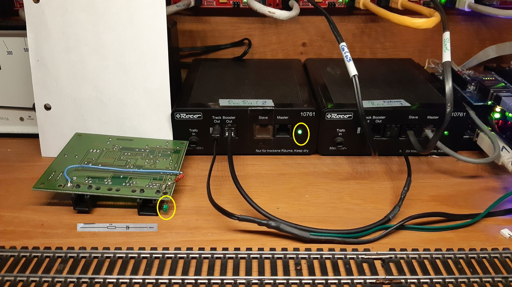
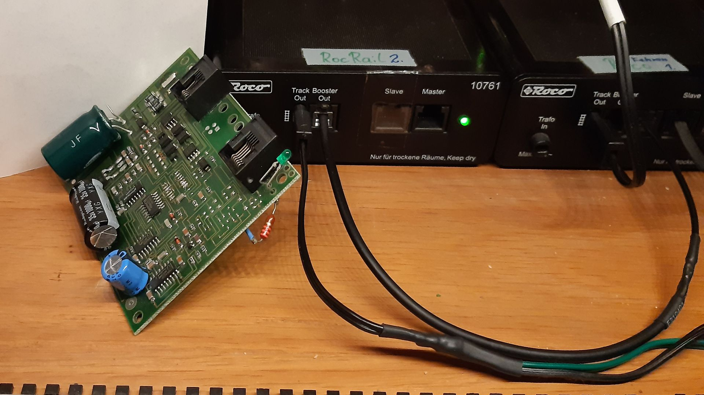
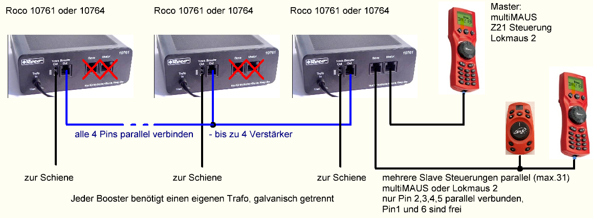

Roco Verstärker Booster 10761, 10764
für jenen der gerne lötet zum selbst nachbaut.
Nachrüstung für "Power on LED"
Nachrüstung einer Power LED Anzeige für Roco Verstärker 10761, benötigt wir nur ein 2,2Kohm Widerstand und eine LED


mehrere Roco 10761, 10764 Verstärker an einer LokMaus, Multimaus oder Z21 Steuerung

Roco 10761, 10764 diese sind günstig, da je einer in jedem Roco Startset enthalten ist.
Ein öffnen des Verstärker/Booster ist nicht notwendig.
Es kann eine 4polige Leitung mit RJ10 Stecker von einen Booster OUT, zu weiteren 2-4 Boostern OUT, einfach alle 4 Pins parallel (Booster Bus) erstellt werden.
An den zusätzlichen 10761, 10764 Master/Slave Eingängen darf dann nichts angesteckt werden, Zerstörungsgefahr (mit Klebeband abkleben).
Umbau einer ROCO Zentrale zu einem Booster
Umbau der ROCO Zentrale zu einem Booster Umbau der ROCO Zentrale zu einem Booster
(externer Link)